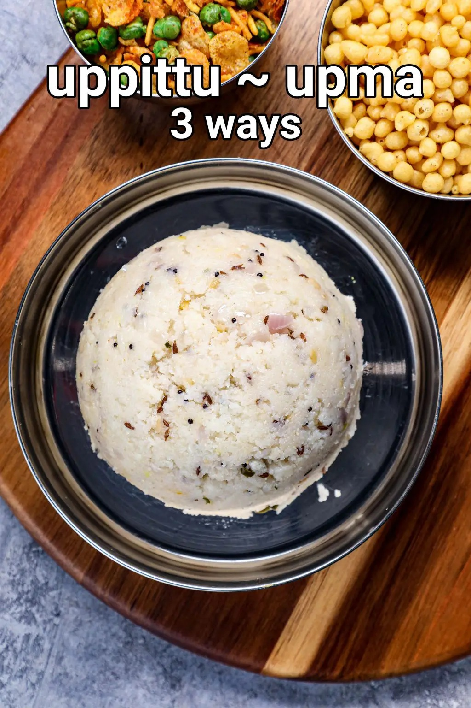

Home
Upma

Upma Recipe 3 Ways | Sooji Upma | Rava Upma | Uppittu Recipe with Detailed photo
and video recipe. a classic South Indian breakfast recipe made with Bombay rava,
or sooji, with assorted spices and herbs.
It is perhaps one of the simplest and most underrated easy breakfast recipes made.
within minutes and can be served to all age groups. The traditional way is
to make it with sooji and fresh herbs, but it can be extended by adding spice
mixes and choice vegetables to make it more flavorful.
Ingredients
- 2 tbsp oil
- ¾ tsp mustard
- 1 tsp cumin
- 1 tsp urad dal
- 1 tsp chana dal
- 1 dried red chilli
- few curry leaves
- ½ onion, finely chopped
- 1 inch ginger, finely chopped
- 2 chilli, finely chopped
- ½ tsp salt
- 3 cup water
- 1 tsp sugar
- 1 cup rava / semolina, coarse
- 1 tsp ghee
- ½ lemon juice
- 2 tbsp coriander, finely chopped
Instructions
- firstly, in a large kadai heat 2 tbsp oil. splutter ¾
tsp mustard, 1 tsp cumin, 1 tsp urad dal, 1 tsp chana dal,
1 dried red chilli and few curry leaves.
- add ½ onion, 1 inch ginger, 2 chilli and ½ tsp salt.
- saute until the onions soften slightly.
- further, add 3 cup water and 1 tsp sugar. get the water to a rolling boil.
- now keep stirring in one hand and add 1 cup rava slowly.
- make sure to keep stirring to prevent lump formation.
- cover and simmer for 2 minutes or until the rava absorb all the water.
- add 1 tsp ghee, ½ lemon juice and 2 tbsp coriander. mix well.
- finally, enjoy north karnataka style uppittu with coconut chutney.